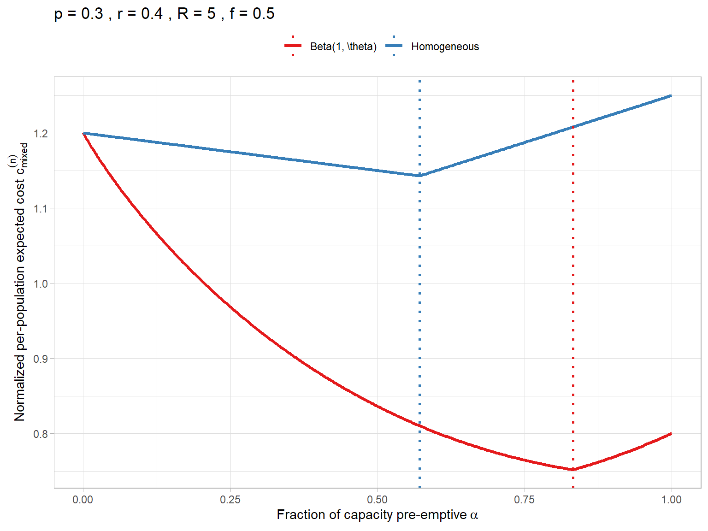
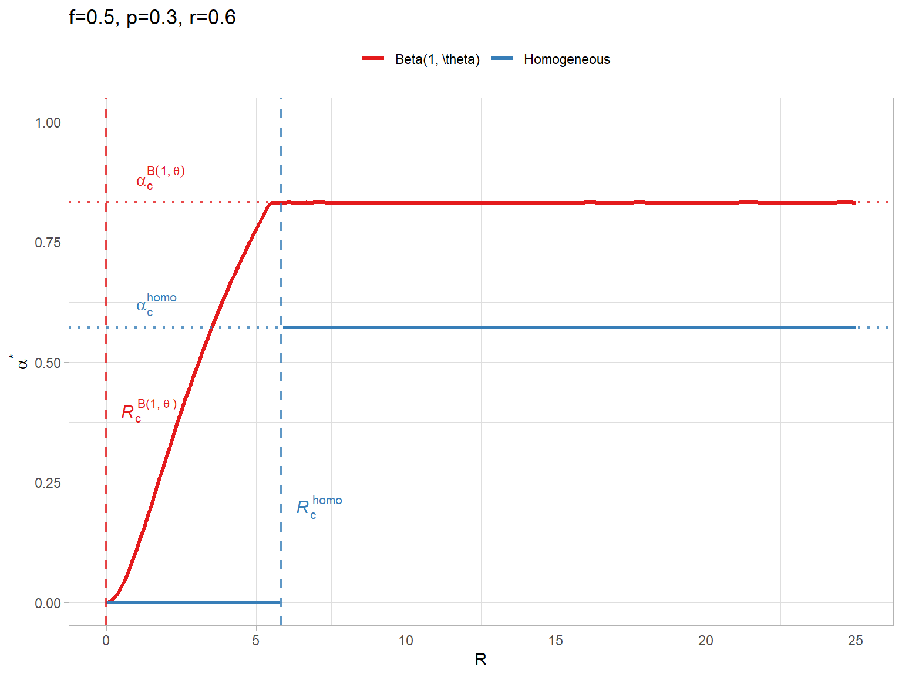
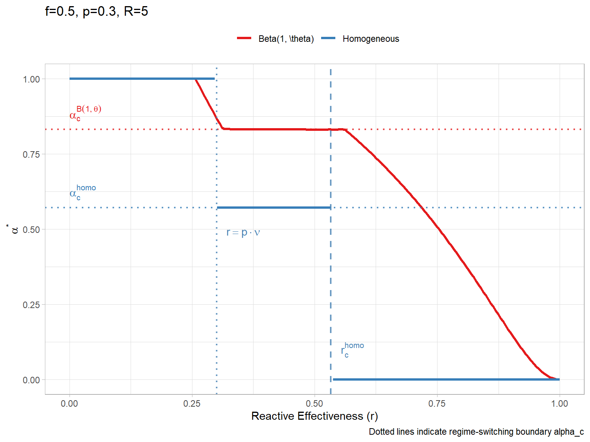
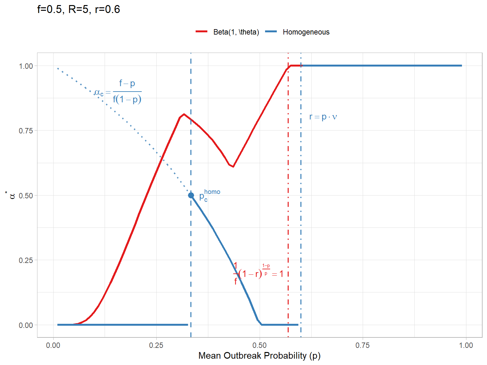
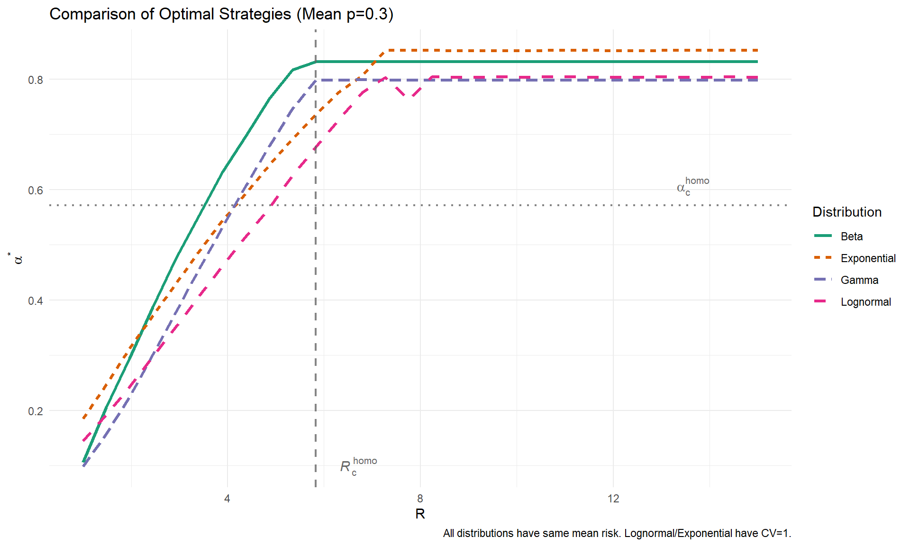
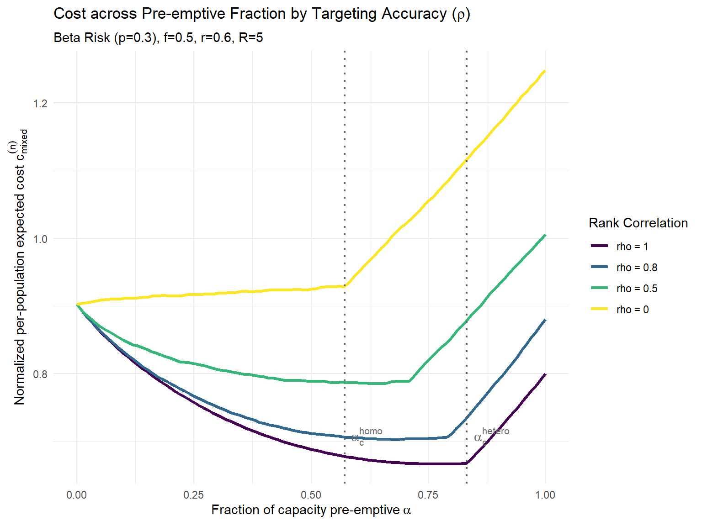
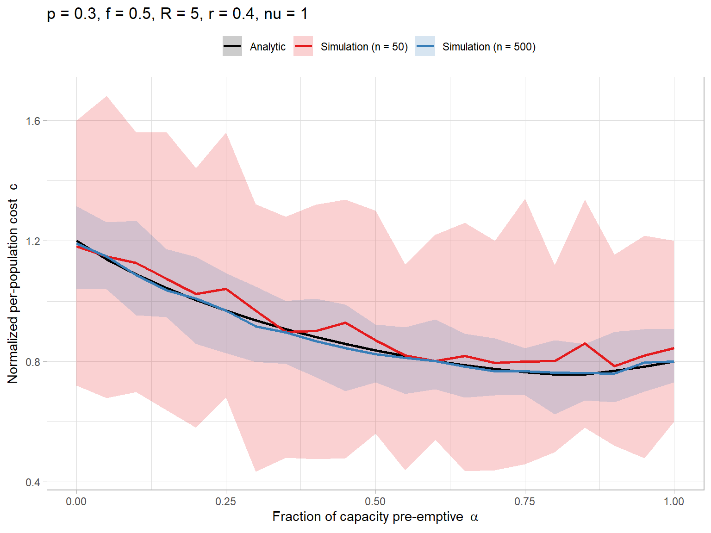

Heterogeneous Risk and Targeting Accuracy in Vaccination Allocation
Author
Jong-Hoon Kim
Published
March 9, 2026
1 Introduction
We extend the homogeneous risk model to a heterogeneous risk setting where the outbreak probability \(x\) varies across the population according to a probability density function \(g(x)\).
We first assume perfect targeting for the pre-emptive strategy: the ability to identify and vaccinate the highest-risk sub-populations first. We then relax this assumption to explore imperfect targeting — both imperfect ranking and parameter uncertainty. Reactive vaccination targets units that actually experience an outbreak but is constrained by delay and logistics.
2 Model Setup
2.1 Risk Distribution
Let the outbreak risk \(X\) for a randomly selected unit follow a Beta distribution with parameters \(\alpha=1\) and \(\beta=\theta\). This gives a strictly decreasing density for \(\theta > 1\) (or uniform for \(\theta=1\)), capturing the realistic scenario where most units have low risk and a few have high risk.
\[
X \sim \text{Beta}(1, \theta)
\]
The PDF is: \[
g(x) = \theta (1-x)^{\theta-1}, \quad x \in [0,1], \, \theta > 0.
\]
This follows from the general Beta PDF \(f(x;\alpha,\beta) = x^{\alpha-1}(1-x)^{\beta-1}/B(\alpha,\beta)\) by substituting \(\alpha=1\), \(\beta=\theta\), and noting \(B(1,\theta) = 1/\theta\).
The mean outbreak probability is: \[
p = \mathbb{E}[X] = \frac{1}{1+\theta} \implies \theta = \frac{1-p}{p}.
\] Thus, we can parameterize the distribution entirely by the mean risk \(p\).
2.2 Baseline: Perfect Targeting Strategy
Suppose we have a total vaccine capacity \(f\) (as a fraction of the total population). We decide to use a portion \(f_{\mathrm{pre}}\) for pre-emptive vaccination and reserve \(f_{\mathrm{react}} = f - f_{\mathrm{pre}}\) for reactive campaigns.
Under perfect targeting, we vaccinate all units with risk \(x \ge x^*\) pre-emptively.
The fraction vaccinated pre-emptively is: \[
f_{\mathrm{pre}} = \int_{x^*}^1 g(x) \, dx = \left[ -(1-x)^\theta \right]_{x^*}^1 = (1-x^*)^\theta.
\]
Inverting this gives the risk threshold \(x^*\) for a given capacity \(f_{\mathrm{pre}}\): \[
(1-x^*) = f_{\mathrm{pre}}^{1/\theta} \implies x^* = 1 - f_{\mathrm{pre}}^{1/\theta}.
\]
2.2.1 Average Risk in Pre-emptive Group
The mean risk among the pre-emptively vaccinated group (\(x \ge x^*\)) is: \[
\bar{p}_{\mathrm{pre}} = \frac{\int_{x^*}^1 x g(x) \, dx}{f_{\mathrm{pre}}}
= \frac{\int_{x^*}^1 x \theta (1-x)^{\theta-1} \, dx}{f_{\mathrm{pre}}}.
\] Let \(u = 1-x\), so \(du = -dx\). The limits are \(u_{\mathrm{lower}} = 0\), \(u_{\mathrm{upper}} = 1-x^*\). \[
\int_0^{1-x^*} (1-u) \theta u^{\theta-1} \, du
= \theta \int_0^{1-x^*} (u^{\theta-1} - u^\theta) \, du
= \theta \left[ \frac{u^\theta}{\theta} - \frac{u^{\theta+1}}{\theta+1} \right]_0^{1-x^*}
= (1-x^*)^\theta - \frac{\theta}{\theta+1} (1-x^*)^{\theta+1}.
\] Substituting \((1-x^*)^\theta = f_{\mathrm{pre}}\) and \((1-x^*) = f_{\mathrm{pre}}^{1/\theta}\): \[
f_{\mathrm{pre}} - (1-p) f_{\mathrm{pre}} f_{\mathrm{pre}}^{1/\theta} = f_{\mathrm{pre}} \left[ 1 - (1-p) f_{\mathrm{pre}}^{1/\theta} \right].
\]
Thus, \[
\bar{p}_{\mathrm{pre}} = 1 - (1-p) f_{\mathrm{pre}}^{1/\theta}.
\] Or in terms of \(p\) only: \[
\bar{p}_{\mathrm{pre}} = 1 - (1-p) f_{\mathrm{pre}}^{p/(1-p)}.
\]
2.2.2 Average Risk in the Remaining Group
The remaining population has size \(1 - f_{\mathrm{pre}}\). The mean risk is: \[
\bar{p}_{\mathrm{rem}} = \frac{p - f_{\mathrm{pre}} \bar{p}_{\mathrm{pre}}}{1 - f_{\mathrm{pre}}}
= \frac{p - f_{\mathrm{pre}} + (1-p) f_{\mathrm{pre}}^{1+1/\theta}}{1 - f_{\mathrm{pre}}}.
\] By complementarity, the total expected proportion of outbreaks in the remaining group is: \[
E_{\mathrm{rem}} = \int_0^{x^*} x g(x) \, dx = p - \int_{x^*}^1 x g(x) \, dx = p - f_{\mathrm{pre}}\bar{p}_{\mathrm{pre}}.
\]
3 Cost Analysis
We use a mixed strategy characterized by \(\alpha \in [0,1]\), where \(f_{\mathrm{pre}} = \alpha f\). The remaining capacity for reactive use is \(f_{\mathrm{react}} = (1-\alpha)f\).
3.1 Pre-emptive Cost
The per-population pre-emptive cost \(C_{\mathrm{pre}}(\alpha)\) includes the deterministic vaccination cost plus expected breakthrough outbreaks (due to \(\nu < 1\)).
Note: Using \(\bar{p}_{\mathrm{pre}}\) here is exact (not an approximation), because the cost is linear in the outbreak probability and the expectation of a linear function equals the function of the expectation.
Normalizing by \(C_V\), the per-population expected cost is: \[
c_{\mathrm{pre}}(\alpha) = f_{\mathrm{pre}} [ 1 + \bar{p}_{\mathrm{pre}} (1-\nu) R ].
\]
3.2 Reactive Cost
Let \(p_{\mathrm{rem}} = p - f_{\mathrm{pre}} \bar{p}_{\mathrm{pre}}\) denote the expected proportion of outbreaks in the remaining (unvaccinated) population. Two regimes arise:
Reactive-Rich (\(f_{\mathrm{react}} \ge p_{\mathrm{rem}}\)): All outbreaks can be covered.
The per-population reactive cost is: \[
C_{\mathrm{react}}(\alpha) = p_{\mathrm{rem}} [ C_V + (1-r)C_I ].
\]
The normalized (by \(C_V\)) per-population reactive cost is: \[
c_{\mathrm{react}}(\alpha) = p_{\mathrm{rem}} [ 1 + (1-r)R ].
\]
Reactive-Limited (\(f_{\mathrm{react}} < p_{\mathrm{rem}}\)): Only \(f_{\mathrm{react}}\) outbreaks can be covered; the remainder incur the full illness cost.
The per-population reactive cost is: \[
C_{\mathrm{react}}(\alpha) = f_{\mathrm{react}} [ C_V + (1-r)C_I ] + (p_{\mathrm{rem}} - f_{\mathrm{react}}) C_I.
\]
The normalized per-population reactive cost is: \[
c_{\mathrm{react}}(\alpha) = f_{\mathrm{react}} [ 1 + (1-r)R ] + (p_{\mathrm{rem}} - f_{\mathrm{react}}) R.
\]
3.3 Regime Switch
The transition occurs when supply matches demand: \[
f_{\mathrm{react}} = p_{\mathrm{rem}} \implies (1-\alpha)f = p - \alpha f \bar{p}_{\mathrm{pre}}.
\] Substituting \(\bar{p}_{\mathrm{pre}} = 1 - (1-p)(\alpha f)^{1/\theta}\). \[
(1-\alpha)f = p - \alpha f [ 1 - (1-p)(\alpha f)^{1/\theta} ]
\]\[
(1-\alpha)f = p - \alpha f + \alpha f (1-p) (\alpha f)^{1/\theta}
\]\[
f - \alpha f = p - \alpha f + (1-p) (\alpha f)^{1+1/\theta}
\]\[
f - p = (1-p) f^{1+1/\theta} \alpha^{1+1/\theta}
\] Solving for \(\alpha_c\) (critical pre-emptive fraction): \[
\alpha_c^{1+1/\theta} = \frac{f-p}{(1-p) f^{1+1/\theta}} = \frac{f-p}{1-p} f^{-(1+1/\theta)}
\]\[
\alpha_c = \left( \frac{f-p}{1-p} \right)^{\frac{\theta}{\theta+1}} \frac{1}{f}.
\] Recall \(p = 1/(\theta+1) \implies \theta/(\theta+1) = 1-p\). So the exponent is \(1-p\). \[
\alpha_c = \frac{1}{f} \left( \frac{f-p}{1-p} \right)^{1-p}.
\] This is the closed-form solution for the regime switching point under perfect targeting!
Comparison with Homogeneous Model: The formula for the homogeneous case (where targeting is impossible) is: \[
\alpha_c^{\mathrm{homo}} = \frac{f-p}{f(1-p)}.
\] The heterogeneous result \(\alpha_c^{\mathrm{hetero}} = \frac{1}{f} \left( \frac{f-p}{1-p} \right)^{1-p}\) is strictly greater than the homogeneous case \(\alpha_c^{\mathrm{homo}}\) (given \(p < f < 1\)).
This difference arises because targeting the high-risk tail of the \(\text{Beta}(1, \theta)\) distribution removes a disproportionate share of outbreak risk per vaccine dose. This reduces the burden on the reactive phase more efficiently than untargeted vaccination, shifting the regime boundary upward. For a fixed mean \(p\), the \(\text{Beta}(1, \theta)\) distribution has non-zero variance, so the two models never coincide.
4 Optimization
We seek \(\alpha^*\) to minimize total cost \(c(\alpha) = c_{\mathrm{pre}}(\alpha) + c_{\mathrm{react}}(\alpha)\).
4.1 Functions
Code
# Mean risk in pre-emptive group of size f_premean_risk_pre_beta <-function(f_pre, p) {if (f_pre <=0) {return(0) }if (f_pre >=1) {return(p) } theta <- (1- p) / p# Formula: 1 - (1-p) * f_pre^(1/theta)# 1/theta = p/(1-p) exponent <- p / (1- p)1- (1- p) * f_pre^exponent}# Total Mean Risk (should be p)# Integrate x * theta * (1-x)^(theta-1) from 0 to 1# = p. Correct.# Critical alpha for regime switchalpha_c_beta <-function(f, p) {if (f <= p) {return(-1) } # Always limited exponent <-1- p # theta / (theta+1) term <- (f - p) / (1- p)# alpha_c = (1/f) * term^exponent (1/ f) * (term^exponent)}# Heterogeneous Cost Functioncost_beta <-function(alpha, f, p, R, r, nu =1) { alpha <-pmax(0, pmin(1, alpha)) f_pre <- alpha * f f_react_cap <- (1- alpha) * f# 1. Pre-emptive Cost p_bar_pre <-numeric(length(alpha))# Vectorized calculation idx_pos <- f_pre >0if (any(idx_pos)) { exponent <- p / (1- p) p_bar_pre[idx_pos] <-1- (1- p) * f_pre[idx_pos]^exponent } E_pre <- f_pre * p_bar_pre c_pre_val <- f_pre + E_pre * (1- nu) * R# 2. Reactive Cost# Expected proportion of outbreaks in the remaining (unvaccinated) population E_rem <- p - E_pre# Regime check is_rich <- f_react_cap >= E_rem c_react_val <-ifelse(is_rich, E_rem * (1+ (1- r) * R), f_react_cap * (1+ (1- r) * R) + (E_rem - f_react_cap) * R ) c_pre_val + c_react_val}
4.2 Cost across Pre-emptive Fraction
We visualize the total expected cost \(c(\alpha)\) for both heterogeneous and homogeneous scenarios.
Code
# Parametersf_val_cost <-0.5p_val_cost <-0.3r_val_cost <-0.4R_val_cost <-5nu_val_cost <-1alpha_seq <-seq(0, 1, length.out =500)df_cost <-data.frame(alpha = alpha_seq) %>%mutate(Homogeneous =sapply(alpha, function(a) cost_mix_multi(a, p = p_val_cost, R = R_val_cost, r = r_val_cost, f = f_val_cost, nu = nu_val_cost)),`Beta(1, \\theta)`=sapply(alpha, function(a) cost_beta(a, f = f_val_cost, p = p_val_cost, R = R_val_cost, r = r_val_cost, nu = nu_val_cost)) ) %>%pivot_longer(cols =c("Homogeneous", "Beta(1, \\theta)"), names_to ="Model", values_to ="Cost")# Critical alphasac_homo_cost <- (f_val_cost - p_val_cost) / (f_val_cost * (1- p_val_cost))ac_hetero_cost <-alpha_c_beta(f_val_cost, p_val_cost)df_ref_cost <-data.frame(Model =c("Homogeneous", "Beta(1, \\theta)"),Alpha_c =c(ac_homo_cost, ac_hetero_cost))ggplot(df_cost, aes(x = alpha, y = Cost, color = Model)) +geom_line(linewidth =1.2) +geom_vline(data = df_ref_cost, aes(xintercept = Alpha_c, color = Model), linetype ="dotted", linewidth =1) +theme_light() +labs(x =expression("Fraction of capacity pre-emptive"~ alpha),y =expression(paste("Normalized per-population expected cost ", c[mixed]^{ (n) })),title =paste0("p = ", p_val_cost, " , r = ", r_val_cost, " , R = ", R_val_cost, " , f = ", f_val_cost) ) +scale_color_brewer("", palette ="Set1") +theme(legend.position ="top")

Figure 1: Overall expected cost across pre-emptive fraction (alpha) for Heterogeneous and Homogeneous risk scenarios.
4.3 Comparisons
We compare \(\alpha^*\) under homogeneous vs. heterogeneous assumptions as a function of the cost ratio \(R\).
Code
# Parametersf_val <-0.5p_val <-0.3r_val <-0.6R_seq <-seq(0, 25, length.out =200)# Calculate Alpha Star for each R# We will use numerical optimization for the heterogeneous case to be safe,# though we could derive the slope sign change.get_alpha_star_beta <-function(R, f, p, r, nu =1) {optim(par =0.5, fn = cost_beta,f = f, p = p, R = R, r = r, nu = nu,method ="L-BFGS-B", lower =0, upper =1 )$par}# Wrapper for vector Rcalc_curve <-function(R_vec, type) {sapply(R_vec, function(R) {if (type =="Homogeneous") {# Use existing utility val <-alpha_star_equalrisk(p = p_val, R = R, r = r_val, f = f_val, nu =1)# Handle NA (middle region) by 0 or alpha_c ??# The function returns 0 if reactive is better, alpha_c if mixed is better, 1 if pre.# It handles the logic.return(val) } else {# Hetero# Check corners and critical point?# Numerical is robustget_alpha_star_beta(R, f_val, p_val, r_val) } })}df_plot <-data.frame(R = R_seq) %>%mutate(Homogeneous =calc_curve(R, "Homogeneous"),`Beta(1, \\theta)`=calc_curve(R, "Heterogeneous") ) %>%pivot_longer(cols =c("Homogeneous", "Beta(1, \\theta)"), names_to ="Model", values_to ="Alpha") %>%group_by(Model) %>%mutate(# Create segments for abrupt changes in Homogeneous modelSegment =if (unique(Model) =="Homogeneous") {cumsum(c(TRUE, abs(diff(Alpha)) >1e-6)) } else {1 } ) %>%ungroup()# Calculate critical alphas for reference linesac_homo <- (f_val - p_val) / (f_val * (1- p_val))ac_hetero <-alpha_c_beta(f_val, p_val)# Calculate critical R (start of pre-emptive vaccination, alpha > 0)# Homogeneous: R_c = (1-p) / (p * (nu - r)). With nu=1:Rc_homo <- (1- p_val) / (p_val * (1- r_val))# Heterogeneous: R_c depends on the maximum individual risk x_max.# R_c = (1 - x_max) / (x_max * (nu - r)).# For Beta(1, theta), x_max = 1, so Rc_hetero = 0.Rc_hetero <-0df_ref <-data.frame(Model =c("Homogeneous", "Beta(1, \\theta)"),Alpha_c =c(ac_homo, ac_hetero),Label =c("alpha[c]^{homo}", "alpha[c]^{B(1,theta)}"))ggplot(df_plot, aes(x = R, y = Alpha, color = Model)) +geom_line(aes(group =interaction(Model, Segment)), linewidth =1.2) +geom_hline(data = df_ref, aes(yintercept = Alpha_c, color = Model), linetype ="dotted", linewidth =0.8, alpha =0.8) +geom_text(data = df_ref, aes(x =1, y = Alpha_c, label = Label, color = Model), parse =TRUE, hjust =0, vjust =-0.5, show.legend =FALSE) +# Add vertical line for Rc (Homogeneous)geom_vline(xintercept = Rc_homo, linetype ="dashed", color ="#377eb8", linewidth =0.8, alpha =0.8) +annotate("text", x = Rc_homo +0.5, y =0.20, label =expression(italic(R)[c]^{ homo }), parse =TRUE, color ="#377eb8", hjust =0) +# Add vertical line for Rc (Beta)geom_vline(xintercept = Rc_hetero, linetype ="dashed", color ="#e41a1c", linewidth =0.8, alpha =0.8) +annotate("text", x = Rc_hetero +0.5, y =0.40, label =expression(italic(R)[c]^{"B(1,"~ theta ~")" }), parse =TRUE, color ="#e41a1c", hjust =0) +theme_light() +labs(y =expression(alpha^"*"), title =paste0("f=", f_val, ", p=", p_val, ", r=", r_val)) +scale_color_brewer("", palette ="Set1") +coord_cartesian(ylim =c(0, 1)) +theme(legend.position ="top")

Figure 2: Optimal pre-emptive fraction under Heterogeneous (Perfect Targeting) vs Homogeneous risk.
4.3.1 Threshold for the cost ratio (\(R_c\))
Pre-emptive vaccination becomes optimal (\(\alpha^* > 0\)) when the cost ratio \(R\) exceeds a threshold determined by the highest-risk individuals. The expected pre-emptive cost for an individual with risk \(x_{\max}\) is \(1 + x_{\max}(1-\nu)R\), while the expected reactive cost is \(x_{\max}(1 + (1-r)R)\). Equating these yields: \[
R_c = \frac{1 - x_{\max}}{x_{\max}(\nu - r)}
\]
Homogeneous: Everyone has the same risk, so \(x_{\max} = p\). The threshold is \(R_c^{\mathrm{homo}} = \frac{1-p}{p(\nu-r)}\).
Heterogeneous: The \(\text{Beta}(1,\theta)\) support extends to 1, so \(x_{\max} = 1\) and \(R_c^{\mathrm{B}(1,\theta)} = 0\).
Because individuals with risk arbitrarily close to 1 always exist, pre-emptive vaccination is cheaper than waiting for any positive illness cost \(R\). This explains why the heterogeneous curve in Figure 2 rises immediately from the origin.
The abrupt slope change (“kink”) visible around \(R \approx 6\) corresponds to the saturation of the high-risk tail. As \(R\) increases, the high-risk sub-populations are covered pre-emptively. Once exhausted, the marginal benefit of vaccinating additional (lower-risk) individuals drops, causing the rate of increase in \(\alpha^*\) to slow.
4.4 Impact of Reactive Effectiveness
Fixing \(R\) and varying reactive effectiveness \(r\) reveals the full strategy spectrum: pure pre-emptive (\(\alpha^*=1\)) when \(r\) is low, mixed when \(r\) is moderate, and pure reactive (\(\alpha^*=0\)) when \(r\) is high.
Code
# ParametersR_fixed <-5r_seq <-seq(0, 1, length.out =200)# Wrapper for vector rcalc_curve_r <-function(r_vec, type) {sapply(r_vec, function(r_curr) {if (type =="Homogeneous") {# Use existing utility val <-alpha_star_equalrisk(p = p_val, R = R_fixed, r = r_curr, f = f_val, nu =1)# Handle NAif (is.na(val)) {return(0) } # Logic fallbackreturn(val) } else {# Heteroget_alpha_star_beta(R_fixed, f_val, p_val, r_curr) } })}df_plot_r <-data.frame(r = r_seq) %>%mutate(Homogeneous =calc_curve_r(r, "Homogeneous"),`Beta(1, \\theta)`=calc_curve_r(r, "Heterogeneous") ) %>%pivot_longer(cols =c("Homogeneous", "Beta(1, \\theta)"), names_to ="Model", values_to ="Alpha") %>%group_by(Model) %>%mutate(# Create segments to break the line for Homogeneous steps# For Hetero, we want one continuous line (Segment = 1)# For Homo, we want breaks when values change substantiallySegment =if (unique(Model) =="Homogeneous") {cumsum(c(TRUE, abs(diff(Alpha)) >1e-6)) } else {1 } ) %>%ungroup()# Theoretical alpha_c (regime switch point)ac_homo <- (f_val - p_val) / (f_val * (1- p_val))ac_hetero <-alpha_c_beta(f_val, p_val)# Create a data frame for the reference lines to share the legenddf_ref <-data.frame(Model =c("Homogeneous", "Beta(1, \\theta)"),Alpha_c =c(ac_homo, ac_hetero),Label =c("alpha[c]^{homo}", "alpha[c]^{B(1,theta)}"))# Calculate critical r for Homogeneous case (f=0.5, p=0.3, R=5, nu=1)# Derived from R_c formula: 1-rc = (1-p)/(p*R) => rc = 1 - (1-p)/(p*R)rc_homo <-1- (1- p_val) / (p_val * R_fixed)# Calculate point where p = r/nu => r = p * nunu_val <-1r_equal <- p_val * nu_valggplot(df_plot_r, aes(x = r, y = Alpha, color = Model)) +geom_line(aes(group =interaction(Model, Segment)), linewidth =1.2) +# Add horizontal lines for alpha_cgeom_hline(data = df_ref, aes(yintercept = Alpha_c, color = Model), linetype ="dotted", linewidth =0.8, alpha =0.8) +geom_text(data = df_ref, aes(x =0, y = Alpha_c, label = Label, color = Model), parse =TRUE, hjust =0, vjust =-0.5, show.legend =FALSE) +# Add vertical line for rc (Homogeneous)geom_vline(xintercept = rc_homo, linetype ="dashed", color ="steelblue", linewidth =0.8, alpha =0.8) +annotate("text", x = rc_homo +0.02, y =0.1, label ="r[c]^{homo}", parse =TRUE, color ="steelblue", hjust =0) +# Add vertical line for p = r/nugeom_vline(xintercept = r_equal, linetype ="dotted", color ="steelblue", linewidth =0.8, alpha =0.8) +annotate("text", x = r_equal +0.02, y =0.5, label ="r == p%.%nu", parse =TRUE, color ="steelblue", hjust =0, vjust =1) +theme_light() +labs(x ="Reactive Effectiveness (r)",y =expression(alpha^"*"),title =paste0("f=", f_val, ", p=", p_val, ", R=", R_fixed),caption ="Dotted lines indicate regime-switching boundary alpha_c" ) +scale_color_brewer("", palette ="Set1") +theme(legend.position ="top")

Figure 3: Optimal pre-emptive fraction across Reactive Effectiveness (r).
Interpretation of the Critical Threshold \(\alpha_c\) (Dotted Lines):
The critical value \(\alpha_c\) is the maximum pre-emptive coverage before the reactive system becomes overwhelmed:
Reactive-Rich (\(\alpha \le \alpha_c\)): Reactive capacity suffices for all remaining cases.
Reactive-Limited (\(\alpha > \alpha_c\)): Pre-emption has crowded out reactive capacity, and excess outbreaks incur the full illness cost.
Targeting effect: Under \(\text{Beta}(1, \theta)\), \(\alpha_c\) is higher than in the homogeneous case because targeting removes cases faster than it consumes capacity, raising the effective ceiling.
The higher \(\alpha^*\) in the heterogeneous case is a direct consequence of perfect targeting.
4.5.1 Mechanism: concentration of risk
Under homogeneous risk, each pre-emptive dose prevents an expected \(p\) outbreaks. With perfect targeting, we prioritize individuals with risk \(x > p\), so \(\bar{p}_{\mathrm{pre}} > p\) for any \(\alpha < 1\). This raises the cases prevented per dose from \(\nu p\) to \(\nu \bar{p}_{\mathrm{pre}}\), making pre-emption economically favorable at lower values of \(R\).
4.5.2 Diminishing returns and the “crossover”
Interestingly, there is a region (visible in Figure 3 between \(r \approx 0.25\) and \(p \nu\)) where the homogeneous model maintains full pre-emption (\(\alpha^*=1\)) while the heterogeneous model adopts a mixed strategy (\(\alpha^* < 1\)). This occurs because of diminishing marginal returns: after covering the high-risk tail, the remaining population has below-average risk, so it becomes efficient to reserve doses for reactive use rather than vaccinating additional low-risk individuals.
4.5.3 Generality
The key result — that \(R_c\) is lower (or zero) under heterogeneous risk with perfect targeting — generalizes to any risk distribution with non-zero variance, provided we target higher-risk groups first. Sorting by risk ensures that the first individuals vaccinated have risk \(x > E[X]\), boosting the marginal benefit of pre-emption. However, a lower \(R_c\) does not guarantee higher \(\alpha^*\) at all parameter values, because diminishing returns can cause the heterogeneous \(\alpha^*\) to fall below the homogeneous value in certain regions. The magnitude of the advantage depends on the skewness of the risk distribution: highly skewed distributions (Beta, Gamma, Lognormal) where a small group holds most of the risk show a widely expanded pre-emption-optimal region.
4.5.4 Why is \(\alpha^*\) “smooth” in the heterogeneous case?
In the homogeneous model, the optimal strategy is always a corner solution (\(\alpha^* \in \{0, \alpha_c, 1\}\)) because each dose yields identical benefit. In contrast, the heterogeneous model produces interior optima because marginal returns are diminishing:
Homogeneous (constant returns): Every unit has risk \(p\), so the trade-off is linear. If pre-emption beats reaction, vaccinate everyone; otherwise vaccinate no one. The only intermediate value is the capacity constraint \(\alpha_c\).
Heterogeneous (diminishing returns): Targeting high-risk units first means early doses yield large benefits but later doses yield progressively smaller benefits. The optimum \(\alpha^*\) occurs where marginal benefit equals marginal cost, which can lie anywhere in \([0, 1]\).
4.6 Impact of mean outbreak probability
We now examine how \(\alpha^*\) varies with the mean outbreak probability \(p\).
Code
# ParametersR_fixed <-5f_fixed <-0.5r_fixed <-0.6p_seq <-seq(0.01, 0.99, length.out =100)# Wrapper for vector pcalc_curve_p <-function(p_vec, type) {sapply(p_vec, function(p_curr) {if (type =="Homogeneous") {# Use existing utility val <-alpha_star_equalrisk(p = p_curr, R = R_fixed, r = r_fixed, f = f_fixed, nu =1)if (is.na(val)) {return(0) }return(val) } else {# Heteroget_alpha_star_beta(R_fixed, f_fixed, p_curr, r_fixed) } })}df_plot_p <-data.frame(p = p_seq) %>%mutate(Homogeneous =calc_curve_p(p, "Homogeneous"),`Beta(1, \\theta)`=calc_curve_p(p, "Heterogeneous") ) %>%pivot_longer(cols =c("Homogeneous", "Beta(1, \\theta)"), names_to ="Model", values_to ="Alpha") %>%group_by(Model) %>%mutate(# Create segments for abrupt changes in Homogeneous modelSegment =if (unique(Model) =="Homogeneous") {cumsum(c(TRUE, abs(diff(Alpha)) >0.05)) } else {1 } ) %>%ungroup()# Calculate critical p for Homogeneous case# R_c = (1-p) / (p * (1-r)) => R * p * (1-r) = 1 - p# p * (1 + R*(1-r)) = 1 => p_c = 1 / (1 + R*(1-r))pc_homo <-1/ (1+ R_fixed * (1- r_fixed))# Alpha_c at p_c (Homogeneous)ac_homo_p <- (f_fixed - pc_homo) / (f_fixed * (1- pc_homo))# Saturation points (Alpha* -> 1)p_sat_homo <- r_fixed /1# nu=1p_sat_hetero <-1/ (1+log(f_fixed) /log(1- r_fixed)) # Derived from (1/f)*(1-r)^((1-p)/p) = 1# Calculate Alpha_c for Homogeneous case across pdf_plot_p <- df_plot_p %>%mutate(Alpha_c_Homo = (f_fixed - p) / (f_fixed * (1- p)),Alpha_c_Homo =ifelse(p < f_fixed, Alpha_c_Homo, NA) # Only defined / positive when p < f )ggplot(df_plot_p, aes(x = p, y = Alpha, color = Model)) +geom_line(aes(group =interaction(Model, Segment)), linewidth =1.2) +# Add alpha_c(p) curvegeom_line(aes(y = Alpha_c_Homo), linetype ="dotted", color ="#377eb8", linewidth =0.8, alpha =0.8, na.rm =TRUE) +annotate("text", x =0.1, y =0.9, label ="alpha[c] == frac(f-p, f*(1-p))", parse =TRUE, color ="#377eb8", hjust =0) +# Vertical line at p_cgeom_vline(xintercept = pc_homo, linetype ="dashed", color ="#377eb8", linewidth =0.8, alpha =0.8) +annotate("text", x = pc_homo +0.02, y =0.5, label ="p[c]^{homo}", parse =TRUE, color ="#377eb8", hjust =0) +# Point at (p_c, alpha_c)annotate("point", x = pc_homo, y = ac_homo_p, color ="#377eb8", size =3) +# Saturation Line Homogeom_vline(xintercept = p_sat_homo, linetype ="dotdash", color ="#377eb8", linewidth =0.8, alpha =0.8) +annotate("text", x = p_sat_homo +0.02, y =0.8, label ="r == p%.%nu", parse =TRUE, color ="#377eb8", hjust =0) +# Saturation Line Heterogeom_vline(xintercept = p_sat_hetero, linetype ="dotdash", color ="#e41a1c", linewidth =0.8, alpha =0.8) +annotate("text", x = p_sat_hetero -0.01, y =0.2, label ="frac(1,f)*(1-r)^frac(1-p,p) == 1", parse =TRUE, color ="#e41a1c", hjust =1) +theme_light() +labs(x ="Mean Outbreak Probability (p)",y =expression(alpha^"*"),title =paste0("f=", f_fixed, ", R=", R_fixed, ", r=", r_fixed) ) +scale_color_brewer("", palette ="Set1") +theme(legend.position ="top")

Figure 4: Optimal pre-emptive fraction across Mean Outbreak Probability (p).
4.7 Intuition: non-monotonic behavior of optimal \(\alpha\)
The relationship between \(\alpha^*\) and \(p\) is non-monotonic, reflecting the tension between vaccination efficiency and capacity constraints.
4.7.1 Phase 1: Low risk (rising \(\alpha^*\))
When \(p\) is low, reactive vaccination is efficient because doses are used only when outbreaks occur. As \(p\) rises, the “hit rate” of pre-emptive vaccination improves. In the heterogeneous model, targeting the high-risk tail makes pre-emption viable at lower \(p\) than in the homogeneous case.
As \(p\) increases further, the expected outbreaks in the remaining population grow. To avoid the costly Reactive-Limited regime (full illness cost \(R\) per uncovered case), the optimal strategy reserves more capacity for reactive use, forcing \(\alpha^*\) down.
4.7.3 Phase 3: High risk (rising \(\alpha^*\) again)
When \(p\) approaches or exceeds \(f\), the Reactive-Limited regime becomes unavoidable. The decision reduces to a pure efficiency comparison: pre-emptive doses prevent \(\approx \nu\) outbreaks vs. reactive doses preventing \(\approx r\) outbreaks. With \(\nu = 1 > r = 0.6\), pre-emption is more efficient, so \(\alpha^* \to 1\). As \(p \to 1\), the Beta distribution’s variance vanishes and the two models converge.
4.7.3.1 Derivation of Saturation Point
Saturation (\(\alpha^* = 1\)) occurs when \(p\) is high enough that pure pre-emption dominates.
Homogeneous: The transition occurs at \(p = r/\nu\). With \(r=0.6, \nu=1\), this gives \(p = 0.6\).
Heterogeneous: Under perfect targeting with \(X \sim \text{Beta}(1, \theta)\) and \(\nu=1\), the total cost in the reactive-limited regime is: \[
c(\alpha) = f + R\left[p - f_{\mathrm{pre}} \bar{p}_{\mathrm{pre}} - f_{\mathrm{react}} r\right].
\] Taking the derivative with respect to \(\alpha\) (using \(\frac{d}{d\alpha}(f_{\mathrm{pre}} \bar{p}_{\mathrm{pre}}) = f \cdot x^*\), where \(x^* = 1 - (\alpha f)^{p/(1-p)}\) is the risk of the marginal individual): \[
\frac{dc}{d\alpha} = Rf\left[-x^*(\alpha f) + r\right] = Rf\left[r - 1 + (\alpha f)^{p/(1-p)}\right].
\] Setting \(dc/d\alpha = 0\) at \(\alpha = 1\) gives the saturation condition: \[
f^{p/(1-p)} = 1 - r \qquad \Longleftrightarrow \qquad \frac{1}{f} (1 - r)^{\frac{1-p}{p}} = 1.
\] The intuition: at the optimum, the marginal individual has risk \(x^* = r\), where the pre-emptive benefit (\(\nu x^*\) outbreaks prevented) equals the reactive benefit (\(r\) outbreaks prevented). Saturation occurs when even the lowest-risk individual has risk \(\geq r\).
Solving for \(p\) with \(f=0.5, r=0.6, \nu=1\): \[
p = \frac{1}{1 + \frac{\ln f}{\ln(1-r)}} \approx \frac{1}{1 + \frac{-0.693}{-0.916}} \approx 0.569
\] Thus, for \(p \gtrsim 0.57\), the optimal strategy is full pre-emptive vaccination (\(\alpha^*=1\)).
The heterogeneous model saturates earlier (\(p \approx 0.57\) vs. \(p = 0.6\)) because targeting removes more risk per dose, making full pre-emption optimal at a lower average risk.
4.8 Comparison of Parametric Distributions
The analysis generalizes to other risk distributions. The core logic is unchanged: target the top fraction \(f_{\mathrm{pre}}\), compute \(\bar{p}_{\mathrm{pre}}\) in that group, and apply the cost formulas.
We compare four distributions, all calibrated to the same mean\(p\):
Gamma: \(X \sim \text{Gamma}(k, \theta)\) (can be hump-shaped). We choose shape \(k=2\).
Log-normal: \(X \sim \text{Lognormal}(\mu, \sigma)\). We match the Coefficient of Variation (CV) to the Exponential distribution (CV=1).
Note: For distributions with support \([0, \infty)\), risks exceeding 1 are capped at 1 (probability interpretation).
Code
# Generic helper to get mean risk in top fraction f_preget_mean_risk_top <-function(f_pre, density_fn, quantile_fn, p_mean) {if (f_pre <=0) {return(0) }if (f_pre >=1) {return(p_mean) }# Find cutoff x* such that P(X > x*) = f_pre# x* = Quantile(1 - f_pre) x_star <-quantile_fn(1- f_pre)# Integrate x * pdf(x) from x* to Inf (or reasonable max)# robust max for integration upper_bound <-quantile_fn(0.9999) *2# E[X | X > x*] * P(X > x*) = Integral# We want Integral / f_pre# We clamp risk at 1 for consistency with probability definition integrand <-function(x) {pmin(1, x) *density_fn(x) } res <-tryCatch(integrate(integrand, lower = x_star, upper =Inf)$value,error =function(e) {# Fallback for numerical issues far in tailintegrate(integrand, lower = x_star, upper = upper_bound)$value } ) res / f_pre}# Generic cost function wrappercost_generic <-function(alpha, f, p, R, r, dist_list, nu =1) { f_pre <- alpha * f f_react_cap <- (1- alpha) * f# Get p_bar_pre for this specific alpha/f_pre p_bar_pre <-get_mean_risk_top(f_pre, dist_list$d, dist_list$q, p) E_pre <- f_pre * p_bar_pre c_pre_val <- f_pre + E_pre * (1- nu) * R E_rem <-max(0, p - E_pre) # Remaining outbreaks is_rich <- f_react_cap >= E_rem c_react_val <-ifelse(is_rich, E_rem * (1+ (1- r) * R), f_react_cap * (1+ (1- r) * R) + (E_rem - f_react_cap) * R ) c_pre_val + c_react_val}# Optimization wrapperget_alpha_star_generic <-function(R, f, p, r, dist_list) {optim(par =0.5, fn = cost_generic,f = f, p = p, R = R, r = r, dist_list = dist_list,method ="L-BFGS-B", lower =0, upper =1 )$par}# --- Define Distributions (Mean = p = 0.3) ---p_target <-0.3# 1. Beta (Baseline)theta_beta <- (1- p_target) / p_targetlist_beta <-list(d =function(x) dbeta(x, 1, theta_beta),q =function(p) qbeta(p, 1, theta_beta))# 2. Exponential# Mean = 1/rate => rate = 1/prate_exp <-1/ p_targetlist_exp <-list(d =function(x) dexp(x, rate_exp),q =function(p) qexp(p, rate_exp))# 3. Gamma (Shape=2)# Mean = shape * scale => scale = p / shapeshape_gam <-2scale_gam <- p_target / shape_gamlist_gamma <-list(d =function(x) dgamma(x, shape = shape_gam, scale = scale_gam),q =function(p) qgamma(p, shape = shape_gam, scale = scale_gam))# 4. Lognormal (CV=1)# CV = sqrt(exp(sigma^2) - 1). If CV=1, exp(sigma^2)=2 => sigma^2 = ln(2)sig2_ln <-log(2)sig_ln <-sqrt(sig2_ln)# Mean = exp(mu + sigma^2/2) => p = exp(mu + ln(2)/2)# log(p) = mu + 0.5*ln(2) => mu = log(p) - 0.5*ln(2)mu_ln <-log(p_target) -0.5* sig2_lnlist_lnorm <-list(d =function(x) dlnorm(x, meanlog = mu_ln, sdlog = sig_ln),q =function(p) qlnorm(p, meanlog = mu_ln, sdlog = sig_ln))# --- Generate Plot ---R_sweep <-seq(1, 15, length.out =30)run_sweep <-function(dist_list) {sapply(R_sweep, function(RR) get_alpha_star_generic(RR, 0.5, p_target, 0.6, dist_list)) |>as.numeric()}df_dists <-data.frame(R = R_sweep) %>%mutate(Beta =run_sweep(list_beta),Exponential =run_sweep(list_exp),Gamma =run_sweep(list_gamma),Lognormal =run_sweep(list_lnorm) ) %>%pivot_longer(cols =-R, names_to ="Distribution", values_to ="Alpha")# Calculate critical R for Homogeneous case (p=0.3, r=0.6, nu=1)# Rc = (1-p)/(p*(1-r))Rc_homo_dist <- (1- p_target) / (p_target * (1-0.6))# Calculate alpha_c for Homogeneous and Betaac_homo_dist <- (0.5- p_target) / (0.5* (1- p_target))ac_beta_dist <-alpha_c_beta(0.5, p_target)ggplot(df_dists, aes(x = R, y = Alpha, color = Distribution, linetype = Distribution)) +geom_line(linewidth =1.2) +geom_vline(xintercept = Rc_homo_dist, linetype ="dashed", color ="gray40", linewidth =0.8, alpha =0.8) +# Add alpha_c linesgeom_hline(yintercept = ac_homo_dist, linetype ="dotted", color ="gray40", linewidth =0.8, alpha =0.8) +annotate("text", x =14, y = ac_homo_dist, label ="alpha[c]^{homo}", parse =TRUE, color ="gray40", vjust =-0.5, hjust =1) +annotate("text", x = Rc_homo_dist +0.5, y =0.1, label ="italic(R)[c]^{homo}", parse =TRUE, color ="gray40", hjust =0) +theme_minimal() +labs(title =paste0("Comparison of Optimal Strategies (Mean p=", p_target, ")"),y =expression(alpha^"*"),caption ="All distributions have same mean risk. Lognormal/Exponential have CV=1." ) +scale_color_brewer(palette ="Dark2")

Figure 5: Optimal pre-emptive fraction for different risk distributions (Mean p=0.3).
Interpretation:
Distributions with heavier tails (higher skewness) favor pre-emptive vaccination more strongly, switching at lower \(R\). The \(\text{Beta}(1, \theta)\) distribution — highly skewed with mass concentrated near zero — benefits most from targeting. The Exponential and Lognormal are moderately skewed. The \(\text{Gamma}(2, \cdot)\) is least skewed (hump-shaped), so the switch to pre-emption requires a higher \(R\).
5 Imperfect Targeting
We now relax the perfect targeting assumption. In practice, prioritizing high-risk populations is limited by information gaps and logistical constraints. We consider two dimensions of imperfection:
Imperfect Ranking: Targeting is based on a score \(S\) imperfectly correlated with true risk \(X\). The population mean \(p\) is correctly estimated, but errors occur in identifying who is highest risk.
Imperfect Estimation: Individuals are correctly ranked, but the overall risk magnitude is misestimated (\(\hat{p} \neq p\)).
5.1 Imperfect Ranking (Correlation)
True risk \(X\) follows \(\text{Beta}(1, \theta)\) as before. We define a targeting score \(S\) with Spearman rank correlation\(\rho \in [0, 1]\) between \(X\) and \(S\): \(\rho=1\) is perfect targeting, and \(\rho=0\) is random selection (equivalent to homogeneous targeting). The correlation is tuned via a Gaussian copula mechanism on the underlying exponential scale, preserving the marginal distribution of risk.
5.2 Cost across Pre-emptive Fraction under Imperfect Ranking
We visualize \(c(\alpha)\) under varying levels of ranking accuracy \(\rho\).
Code
# Parametersp_cost_rho <-0.3f_cost_rho <-0.5r_cost_rho <-0.6R_cost_rho <-5theta_cost_rho <- (1- p_cost_rho) / p_cost_rhonu_cost_rho <-1M_pop_cost <-5000# Pre-generate population for MC consistencyset.seed(1)pop_data_cost <-sim_lambda_P(M_pop_cost, theta_cost_rho)lambda_vec_cost <- pop_data_cost$lambdaP_vec_cost <- pop_data_cost$Palpha_seq_rho <-seq(0, 1, length.out =101)rhos_for_cost <-c(1.0, 0.8, 0.5, 0.0)# Calculate cost curves for each rho using cached sigmacost_curves <-lapply(rhos_for_cost, function(rho_val) { sigma_val <-calibrate_sigma_for_rho(lambda_vec_cost, rho_target = rho_val, seed =123) costs <-sapply(alpha_seq_rho, function(a) {cost_mix_heterorisk(alpha = a, f = f_cost_rho, r = r_cost_rho, R = R_cost_rho,theta = theta_cost_rho, rho = rho_val, nu = nu_cost_rho,lambda = lambda_vec_cost, P = P_vec_cost,seed_sigma =123, seed_score =456, sigma_cache = sigma_val ) })data.frame(Alpha = alpha_seq_rho, Rho = rho_val, Cost = costs)})df_cost_rho <-do.call(rbind, cost_curves) %>%mutate(Rho_Label =factor(paste0("rho = ", Rho), levels =paste0("rho = ", rhos_for_cost)))# Critical alpha linesac_homo_cost_rho <- (f_cost_rho - p_cost_rho) / (f_cost_rho * (1- p_cost_rho))ac_beta_cost_rho <-alpha_c_beta(f_cost_rho, p_cost_rho)ggplot(df_cost_rho, aes(x = Alpha, y = Cost, color = Rho_Label)) +geom_line(linewidth =1.2) +geom_vline(xintercept = ac_homo_cost_rho, linetype ="dotted", color ="gray40", linewidth =0.8) +geom_vline(xintercept = ac_beta_cost_rho, linetype ="dotted", color ="gray40", linewidth =0.8) +annotate("text", x = ac_homo_cost_rho, y =min(df_cost_rho$Cost), label ="alpha[c]^{homo}", parse =TRUE, color ="gray40", hjust =-0.2, vjust =-1) +annotate("text", x = ac_beta_cost_rho, y =min(df_cost_rho$Cost), label ="alpha[c]^{hetero}", parse =TRUE, color ="gray40", hjust =-0.2, vjust =-1) +theme_minimal() +labs(title =expression("Cost across Pre-emptive Fraction by Targeting Accuracy ("* rho *")"),subtitle =paste0("Beta Risk (p=", p_cost_rho, "), f=", f_cost_rho, ", r=", r_cost_rho, ", R=", R_cost_rho),x =expression("Fraction of capacity pre-emptive"~ alpha),y =expression(paste("Normalized per-population expected cost ", c[mixed]^{ (n) })),color ="Rank Correlation" ) +scale_color_viridis_d()

Figure 6: Overall expected cost across pre-emptive fraction (alpha) under different targeting accuracies (rho).
Code
# ParametersR_vals_corr <-seq(0, 20, length.out =30) # Coarse grid for MC speedp_sim <-0.3f_sim <-0.5r_sim <-0.6theta_sim <- (1- p_sim) / p_sim# Pre-generate population for MC consistency# Note: sim_lambda_P uses its own internal seed (default seed=1)M_pop <-5000# Population size for MC estimationpop_data <-sim_lambda_P(M_pop, theta_sim)lambda_vec <- pop_data$lambdaP_vec <- pop_data$P# Wrapper to find alpha* for a given rho and Rget_alpha_star_rho <-function(rho_val, R_val) {# opt_alpha_heterorisk from analytic_utils.R res <-opt_alpha_heterorisk(f = f_sim, r = r_sim, R = R_val, theta = theta_sim, rho = rho_val,lambda = lambda_vec, P = P_vec,grid_len =101, # Faster grid searchseed_sigma =123,seed_score =456 ) res$alpha_star}# Run sweep for different rhosrhos_to_test <-c(1.0, 0.8, 0.5, 0.0)results_corr <-expand.grid(R = R_vals_corr, Rho = rhos_to_test) %>%mutate(Alpha =mapply(get_alpha_star_rho, Rho, R))results_corr$Rho_Label <-factor(paste0("rho = ", results_corr$Rho),levels =paste0("rho = ", c(1.0, 0.8, 0.5, 0.0)))# Calculate critical R for Homogeneous case (p=0.3, r=0.6, nu=1)Rc_homo_rank <- (1- p_sim) / (p_sim * (1- r_sim))# Alpha_c valuesac_homo_rank <- (f_sim - p_sim) / (f_sim * (1- p_sim))ac_beta_rank <-alpha_c_beta(f_sim, p_sim)ggplot(results_corr, aes(x = R, y = Alpha, color = Rho_Label)) +geom_line(linewidth =1.2) +geom_vline(xintercept = Rc_homo_rank, linetype ="dashed", color ="gray40", linewidth =0.8, alpha =0.8) +# Add alpha_c linesgeom_hline(yintercept = ac_homo_rank, linetype ="dotted", color ="gray40", linewidth =0.8, alpha =0.8) +annotate("text", x =18, y = ac_homo_rank, label ="alpha[c]^{homo}", parse =TRUE, color ="gray40", vjust =-0.5, hjust =1) +geom_hline(yintercept = ac_beta_rank, linetype ="dotted", color ="gray40", linewidth =0.8, alpha =0.8) +annotate("text", x =18, y = ac_beta_rank, label ="alpha[c]^{hetero}", parse =TRUE, color ="gray40", vjust =-0.5, hjust =1) +annotate("text", x = Rc_homo_rank +0.5, y =0.1, label ="italic(R)[c]^{homo}", parse =TRUE, color ="gray40", hjust =0) +theme_minimal() +labs(title =expression("Impact of Ranking Accuracy ("* rho *")"),subtitle =paste0("Beta Risk (p=", p_sim, "), f=", f_sim, ", r=", r_sim),x ="Relative Cost of Illness (R)",y =expression(alpha^"*"),color ="Rank Correlation" ) +scale_color_viridis_d()
As targeting quality degrades (lower \(\rho\)), the advantage of pre-emptive vaccination diminishes. At \(\rho=1\), pre-emption switches on at low \(R\); at \(\rho=0\), the strategy mimics the homogeneous case, requiring much higher \(R\) to justify pre-emption. Intermediate correlations produce intermediate switching points.
5.3 Parameter Uncertainty (Wrong Mean)
Suppose the planner estimates mean risk as \(\hat{p}\), but the true mean is \(p_{\mathrm{true}}\). The planner chooses \(\hat{\alpha}^*\) based on \(\hat{p}\), and we evaluate its true cost. The Cost Penalty is the percentage increase over the oracle-optimal cost:
Figure 10: Realized Cost as a Function of Estimated Mean Risk.
Interpretation of the Penalty Curve Shape:
The cost penalty curve exhibits a piecewise structure with distinct kinks, reflecting the regime boundaries and corner solutions of the optimal strategy:
True minimum: At \(\hat{p} = p_{\mathrm{true}} = 0.4\), the estimate is perfect and the penalty is zero.
Underestimation (\(\hat{p} < 0.4\)): Underestimating risk leads to under-investment in pre-emption (\(\hat{\alpha}^* \to 0\)), forgoing the superior protection of pre-emptive vaccination (\(\nu > r\)). The penalty is larger when \(f\) is large (more wasted capacity): \({\sim}50\%\) at \(f=0.55\) vs. \({\sim}10\%\) at \(f=0.25\) when \(\hat{p}=0.1\).
Local humps: Because \(\alpha^*(\hat{p})\) is non-monotonic (see Figure 4), humps in the penalty curve can appear on both sides of \(p_{\mathrm{true}}\).
Overestimation plateau (\(\hat{p} > 0.67\)): Overestimating risk drives \(\hat{\alpha}^* \to 1\) (Phase 3 logic). Once \(\hat{\alpha}^* = 1\), further increases in \(\hat{p}\) do not change the action, so the penalty plateaus.
When \(f=0.25 < p\): Capacity is already severely constrained, so the true optimum already favors near-full pre-emption. Overestimation leads to the same action as the oracle strategy, yielding zero penalty.
6 Stochastic Validation
The analytic cost expressions derived in this document are exact in the large-population limit. To verify these results and illustrate finite-population variability, we implement a stochastic simulation that explicitly draws outbreak events for \(n\) populations.
6.1 Algorithm
Given parameters \((n, p, f, R, r, \nu, \alpha, \rho)\):
Target selection: Rank populations by true risk (\(\rho = 1\)) or by a noisy score (\(\rho < 1\)).
Pre-emptive vaccination: Vaccinate the top \(n_{\mathrm{pre}} = \lfloor n \alpha f \rfloor\) populations.
Outbreak draws: For each population \(i\), draw \(Y_i \sim \text{Bernoulli}(x_i)\).
Reactive allocation: Among non-pre-emptive populations with \(Y_i = 1\), randomly select up to \(n_{\mathrm{react}} = \lfloor n(1-\alpha)f \rfloor\) to receive reactive vaccination.
Cost computation (normalized by \(C_V\), so \(R = C_I / C_V\)):
\[
c_i = \begin{cases}
1 + Y_i (1 - \nu) R & \text{if pre-emptively vaccinated,} \\
1 + (1 - r) R & \text{if reactively vaccinated (}Y_i = 1\text{),} \\
R & \text{if outbreak, unmitigated (}Y_i = 1\text{),} \\
0 & \text{if no outbreak, no vaccine.}
\end{cases}
\]
By the law of large numbers, \(c \to c_{\mathrm{analytic}}(\alpha)\) as \(n \to \infty\). For finite \(n\), the variance reflects stochastic outbreak realization.
6.2 Simulation
Code
# Parametersp_stoch <-0.3f_stoch <-0.5R_stoch <-5r_stoch <-0.4nu_stoch <-1rho_stoch <-1n_sim_stoch <-50alpha_grid_stoch <-seq(0, 1, length.out =21)# Run simulations for small n and large ndf_small <-sim_cost_heterorisk(alpha = alpha_grid_stoch, n =50, p = p_stoch, f = f_stoch,R = R_stoch, r = r_stoch, nu = nu_stoch, rho = rho_stoch,n_sim = n_sim_stoch, seed =42)df_large <-sim_cost_heterorisk(alpha = alpha_grid_stoch, n =500, p = p_stoch, f = f_stoch,R = R_stoch, r = r_stoch, nu = nu_stoch, rho = rho_stoch,n_sim = n_sim_stoch, seed =42)# Summarize simulationssummarize_sims <-function(df, label) { df %>%group_by(alpha) %>%summarise(mean_cost =mean(cost),lo =quantile(cost, 0.025),hi =quantile(cost, 0.975),.groups ="drop" ) %>%mutate(Source = label)}df_sim_summary <-bind_rows(summarize_sims(df_small, "Simulation (n = 50)"),summarize_sims(df_large, "Simulation (n = 500)"))# Analytic reference (defined later in this document; inline here for plotting)cost_beta_inline <-function(alpha, f, p, R, r, nu =1) { alpha <-pmax(0, pmin(1, alpha)) f_pre <- alpha * f f_react_cap <- (1- alpha) * f exponent <- p / (1- p) p_bar_pre <-ifelse(f_pre >0, 1- (1- p) * f_pre^exponent, 0) E_pre <- f_pre * p_bar_pre c_pre_val <- f_pre + E_pre * (1- nu) * R E_rem <- p - E_pre is_rich <- f_react_cap >= E_rem c_react_val <-ifelse(is_rich, E_rem * (1+ (1- r) * R), f_react_cap * (1+ (1- r) * R) + (E_rem - f_react_cap) * R ) c_pre_val + c_react_val}df_analytic <-data.frame(alpha = alpha_grid_stoch) %>%mutate(mean_cost =cost_beta_inline(alpha, f_stoch, p_stoch, R_stoch, r_stoch, nu_stoch),lo = mean_cost, hi = mean_cost,Source ="Analytic" )df_all <-bind_rows(df_sim_summary, df_analytic)ggplot(df_all, aes(x = alpha, y = mean_cost, color = Source, fill = Source)) +geom_ribbon(aes(ymin = lo, ymax = hi), alpha =0.2, color =NA) +geom_line(linewidth =1) +theme_light() +labs(x =expression("Fraction of capacity pre-emptive "~ alpha),y =expression("Normalized per-population cost "~ c),title =paste0("p = ", p_stoch, ", f = ", f_stoch, ", R = ", R_stoch,", r = ", r_stoch, ", nu = ", nu_stoch ) ) +scale_color_manual("", values =c("Analytic"="black","Simulation (n = 50)"="#e41a1c","Simulation (n = 500)"="#377eb8" )) +scale_fill_manual("", values =c("Analytic"="black","Simulation (n = 50)"="#e41a1c","Simulation (n = 500)"="#377eb8" )) +theme(legend.position ="top")

Figure 11: Stochastic cost vs. analytic cost across pre-emptive fraction (alpha). Ribbons show the central 95% interval over 50 simulations.
The simulation confirms that the analytic cost curve is recovered as \(n\) grows. For \(n = 500\), the simulation mean closely tracks the analytic reference with narrow confidence intervals. For \(n = 50\), the mean still follows the analytic curve, but individual realizations vary substantially — reflecting the stochastic nature of outbreak occurrence in small populations.